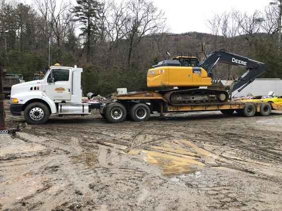
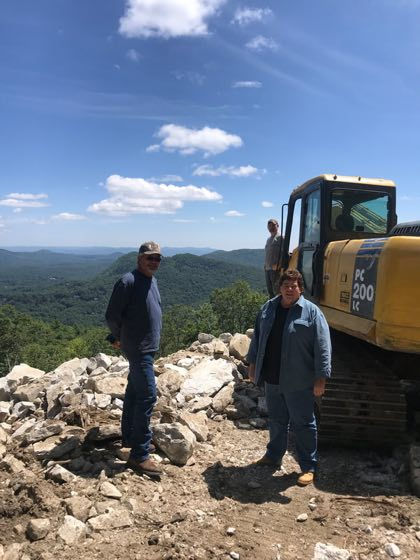
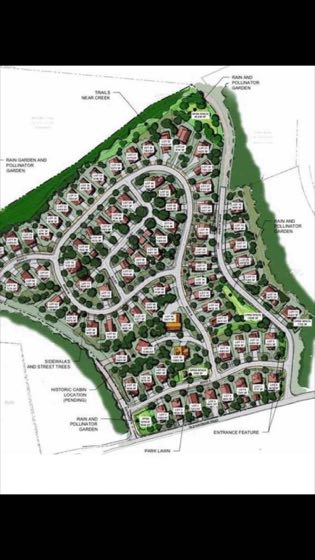
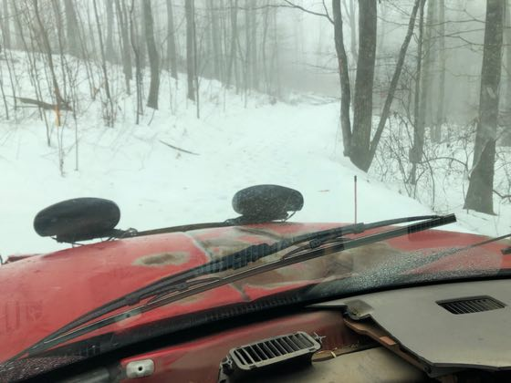
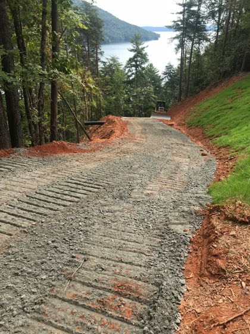
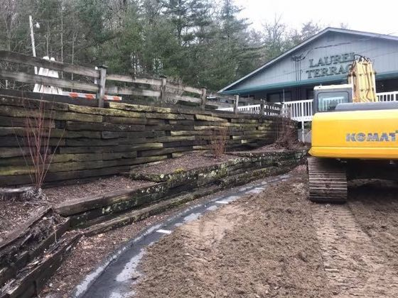

Direct owner communication, specialized mountain equipment, and over two decades of localized excavation & land clearing experience in Jackson & Macon Counties, NC.

Joel Rice Excavating and Grading Inc. is proud to be the longest single-owned and operating excavating contractor on the Cashiers-Highlands Plateau. Based at 327 Hunter Road in Cashiers, Joel Rice has personally shaped thousands of mountain building sites, golf community estates, and steep access roads through solid granite and mountain terrain for over 35 years.
Authentic field photography from recent residential and commercial mountain contracts.
Precision multi-tier estate building pad cut into steep mountain slope with zero erosion and engineered rock benching.

📍 Highlands Ridge & Whiteside Mtn, NCHydraulic rock breaker shattering solid granite bedrock for deep utility trenching and custom estate basement footings.

📍 Lake Toxaway & Sapphire Valley, NCHeavy timber clearing and precision switchback driveway grading engineered to prevent washouts during heavy mountain rains.

📍 Glenville & Cashiers, NCHeavy-duty culvert installations and rock-lined runoff diversion channels protecting building sites from elevation runoff.

📍 Mountaintop Golf Club / Highlands, NCMulti-tier structural cut leveling steep terrain for boulder retaining walls and luxury mountain outdoor living terraces.

📍 High Hampton & Sapphire, NCFine contour grading, view corridor tree clearing, and pasture rough-in preparing estates for custom hardscaping.
Custom building pads, steep ridge cuts, and engineered foundation preparation designed to prevent erosion on high-elevation plateau properties.
Heavy excavator-mounted rock breakers penetrating solid Blue Ridge granite for foundations, basements, and deep utility lines.
Access road carving, steep driveway grading, heavy aggregate compaction, and engineered culverts built to withstand torrential mountain storms.
Certified shallow-placement septic tank and drain field excavation, advanced engineered mound systems, and perk failure remediation.
Rock-lined drainage swales, culvert piping, and watershed runoff protection keeping mountain water away from foundations and out of waterways.
Selective timber clearing to open mountain view corridors, pasture development, and final grading ready for luxury hardscaping.
Specialized high-elevation excavation, rock hammer ledge removal, and mountain erosion defense across the Plateau.
From Highway 107 South and Whiteside Cove to high-altitude estates in Chinquapin, we carve engineered foundation benches directly into mountain granite with heavy rock hammers and zero slope erosion.
Serving Highlands country club communities with precision grading, tight switchback driveway cuts, and deep foundation trenching that meets the highest architectural standards.
Managing steep mountain runoff and river basin soil conditions with rock-lined culverts, drainage swales, and certified septic tank excavation.
Specialized steep slope excavation, lake access road development, and multi-tier retaining terrace preparation along Lake Glenville's rugged shoreline.
Preserving historic plateau soils while clearing mountain view corridors, building pastures, and roughing in luxury hardscape terraces.
Executing golf community site cuts with zero runoff into protected trout streams, strict sediment control, and pristine finish grading.
Building and operating in the Blue Ridge Mountains is fundamentally different from flatland trade work. From weathered granite outcrops and heavy clay soil runoff to extreme winter freeze-thaw cycles, Joel Rice Excavating and Grading Inc. utilizes heavy-duty equipment specifically tailored to steep topography and local environmental codes.
"Joel Rice carved our foundation into the side of a granite ridge in Chinquapin. Flawless pad, zero erosion during torrential rains. The longest-running operator on the Plateau for a reason."
"The only excavation outfit we trust for high-value properties in Highlands. Professional crew, honest upfront pricing, and top-tier heavy iron that handles solid bedrock without flinching."
"Joel gave us an honest upfront estimate when another contractor tried to tack on 40% in rock fees mid-job. Finished our private road cut and septic prep ahead of schedule."
"35 years on the Plateau shows. Joel understands mountain hydrology and slope physics better than anyone in Jackson or Macon county. Not a single puddle near our foundation."
The Plateau averages 3,500 to 4,500 feet in elevation and receives up to 80-100 inches of rainfall annually—among the highest rainfall totals in the continental US. Excavating here requires specialized understanding of mountain hydrology, steep slope stabilization, and Blue Ridge granite mechanics. Good excavation channels water safely away from foundations without causing erosion or runoff into local waterways.
We operate heavy commercial excavators fitted with high-frequency hydraulic rock breakers. Rather than expensive and disruptive blasting, we mechanically fracture and extract granite bedrock to exact footing depths, keeping your pad level and structurally sound.
As the longest single-owned and operating excavation contractor on the Plateau (over 35 years), Joel Rice visits every jobsite personally. We provide honest upfront estimates, assess rock risks in advance, and recommend money-saving adjustments to your site plan while refusing to cut corners on structural integrity.
Yes. We excavate certified residential and commercial septic systems, shallow-placement drain fields, and advanced engineered mound systems across Jackson and Macon counties, working directly with county health inspectors.
Call Joel Rice directly at (828) 743-5801 or visit our shop at 327 Hunter Road in Cashiers. We provide prompt on-site consultations across Cashiers, Highlands, Sapphire, Glenville, and Lake Toxaway.
Skip the dispatch answering services. Talk straight with the owner and lead technician about your project scope, scheduling, and on-site estimate.
(828) 743-5801